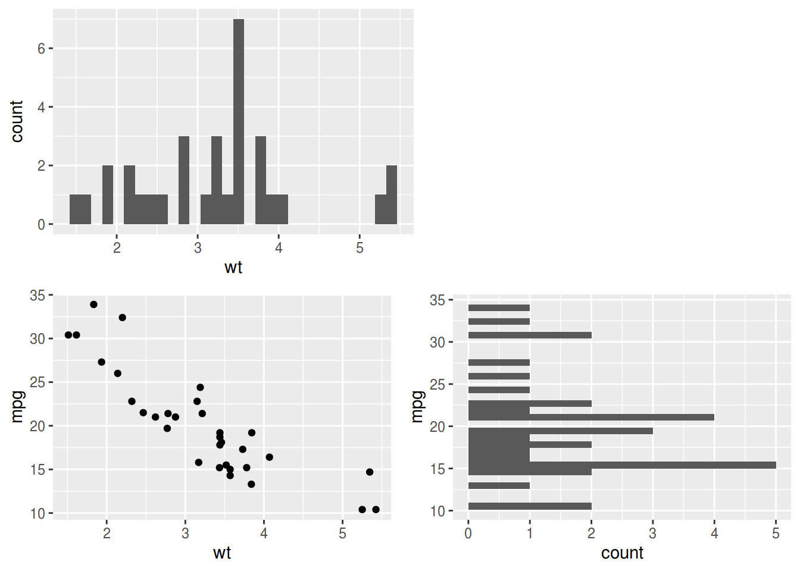
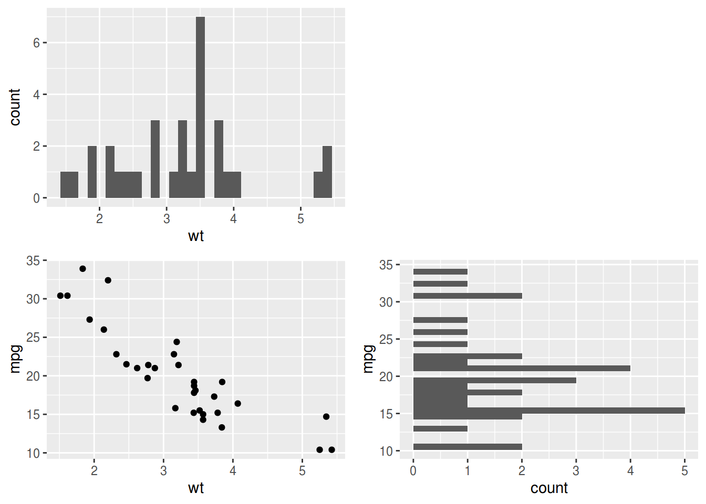
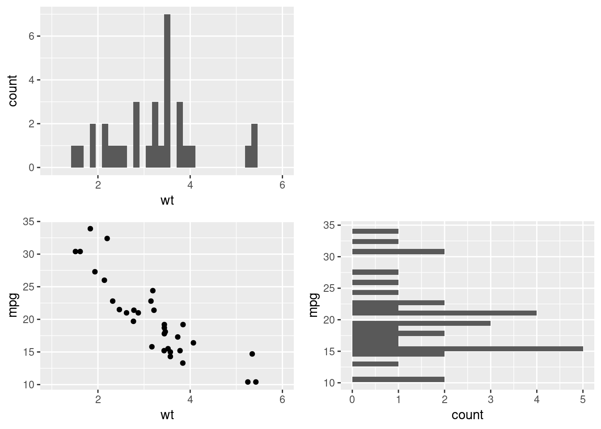
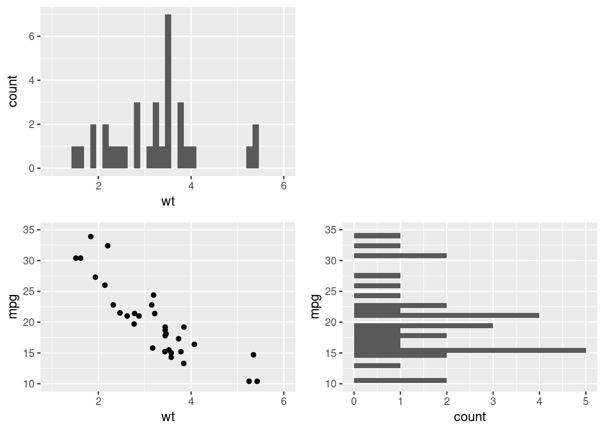
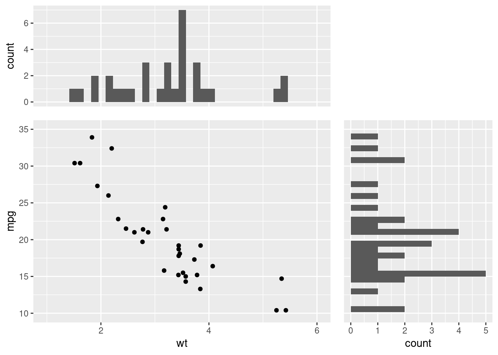

patchworkパッケージを使えばあんな図やこんな図が簡単に，と思い馳せた人も多いのではなかろうか．
中でも周辺分布を自由に綺麗に，と思ったのは私だけではないはず．
しかし，以下のように散布図とその周辺分布を作成し，並べると，イケてない図が仕上がる．
library(ggplot2)
library(patchwork)
xy <- ggplot(mtcars, aes(wt, mpg)) + geom_point()
x <- ggplot(mtcars, aes(wt)) + geom_histogram(bins = 30)
y <- ggplot(mtcars, aes(mpg)) + geom_histogram(bins = 30) + coord_flip()
(x | plot_spacer()) / (xy | y)
実は， wrap_plots() を使うと，イイ線までいく．
wrap_plots(x, plot_spacer(), xy, y, nrow = 2)
しかし，よく見ると，図の大きさが揃っているからそれっぽいだけで，散布図とx軸の周辺分布のx軸範囲が異なっている．
そこで，その2つの図の xlim を揃えてやると……!
xlimits <- coord_cartesian(xlim = c(1, 6)) # xlim() はNG
wrap_plots(x + xlimits, plot_spacer(), xy + xlimits, y, nrow = 2)
できたあ!!
ポイントは
xlim()ではなく，coord_cartesian()を使うこと|,/ではなく，wrap_plots()を使うこと
の2つ．
どうも xlim() を使うと，指定した範囲でビン幅を計算し直してしまうっぽい．
そして，2項演算子と wrap_plots() ではマージンの扱い方が違うようだ．
追記
よくよくよく，見ると，y軸の周辺分布も軸が揃っていなかった． というわけで，最終形は以下のように． やや面倒ですな．
xlimits <- coord_cartesian(xlim = c(1, 6)) # xlim() はNG
wrap_plots(
x + coord_cartesian(xlim = c(1, 6)),
plot_spacer(),
xy + coord_cartesian(xlim = c(1, 6), ylim = c(10, 35)),
y + coord_flip(xlim = c(10, 35)),
nrow = 2
)
また， theme() や wrap_plots(widths =, heights =)を調整すると，かなり頑張った見た目にできる．
theme_marginal_x <- theme(axis.title.x = element_blank(), axis.text.x = element_blank(), axis.ticks.x = element_blank())
theme_marginal_y <- theme(axis.title.y = element_blank(), axis.text.y = element_blank(), axis.ticks.y = element_blank())
wrap_plots(
x + coord_cartesian(xlim = c(1, 6)) + theme_marginal_x,
plot_spacer(),
xy + coord_cartesian(xlim = c(1, 6), ylim = c(10, 35)),
y + coord_flip(xlim = c(10, 35)) + theme_marginal_y,
nrow = 2,
widths = c(1, 0.5),
heights = c(0.5, 1)
)